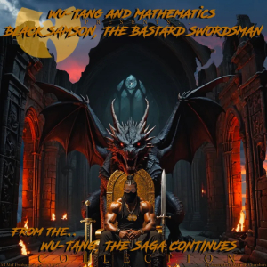

Najświeższe Wiadomości Muzyczne
Bądź na bieżąco z najgorętszymi historiami, nowymi wydaniami i trendującymi tematami w świecie muzyki!
Eurovision 2025: Ogłoszono skład półfinałów
Europejska Unia Nadawców (EBU) ujawnila kolejność startową półfinałów Konkursu Piosenki Eurowizji 2025, który odbędzie się w Bazylei, Szwajcaria. Pierwszy półfinał zaplanowano na wtorek, 13 maja, a drugi na czwartek, 15 maja. Wśród wyróżniających się uczestników są Islandia - VÆB z utworem "RÓA", Polska - Justyna Steczkowska z piosenką "GAJA", oraz Estonia - Tommy Cash z utworem "Espresso Macchiato". Finał odbędzie się 17 maja 2025 roku.

Kendrick Lamar & SZA Rozpoczynają Grand National Tour
19 kwietnia Kendrick Lamar i SZA rozpoczęli swoją długo wyczekiwaną Grand National Tour w U.S. Bank Stadium w Minneapolis. Pierwszy koncert obejmował 52 utwory, w tym wspólne kawałki takie jak "Luther", "Doves in the Wind" i "All the Stars". SZA ledwo uniknęła wpadki na scenie podczas utworu "Diamond Boy (DTM)", ale szybko wróciła do formy. Trasa koncertowa jest pierwszą trasą stadionową dla obu artystów i potrwa do sierpnia, obejmując północnoamerykańską oraz europejską część trasy.

Wu-Tang Clan Wydaje 'Black Samson, The Bastard Swordsman'
Wu-Tang Clan, we współpracy z producentem Mathematicsem, wydali swój nowy album "Black Samson, The Bastard Swordsman" 12 kwietnia, jako ekskluzywny album na Record Store Day. Jest to ich pierwsze pełnometrażowe wydawnictwo od czasu "The Saga Continues" z 2017 roku. Album wydany został w limitowanej edycji podwójnego LP, zaledwie 5 000 egzemplarzy, zawierających unikalną okładkę i kolorowy winyl.

Beck Występuje z BBC Concert Orchestra w Royal Albert Hall
Beck powrócił do londyńskiej Royal Albert Hall na dwa specjalne występy w dniach 19-20 kwietnia, towarzysząc BBC Concert Orchestra. Koncerty zawierały aranżacje orkiestrowe utworów z jego albumów "Morning Phase", "Sea Change" i "Mutations". Wyróżniające się momenty to interpretacje "Blue Moon", "Paper Tiger" i "Tropicalia". Beck zaskoczył również publiczność wykonaniami coverów i improwizowanymi występami, pokazując swoją wszechstronność i kunszt sceniczny.

Nowe Wydania Muzyczne Kwietnia 2025
W kwietniu pojawiło się wiele nowych wydań muzycznych. Album na żywo Neila Younga "Coastal" zawiera występy z jego ostatniej trasy, łącząc klasyki z nowszym materiałem. Elton John wydał "The Lockdown Sessions II", na którym znajdują się współprace z różnymi artystami. Inne godne uwagi wydania to albumy zespołów Ghost, Billy'ego Idola oraz L.A. Guns. Record Store Day przyniósł również ekskluzywne edycje winylowe, ciesząc kolekcjonerów na całym świecie.